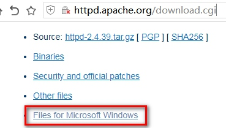

- php笔记2018
- 1 第一章:环境配置
- 2 开发工具介绍与配置
- 3 03.PHP基础语法
- 4 04.变量
- 5 05.数据类型
- 6 06.数据类型转换
- 7 07.变量与数据类型常用函数
- 8 008.常量
- 9 09.运算符
- 10 10.条件结构
- 11 11.循环结构及特殊流程
- 12 12.开启PHP的XDebug或zend_debugger配合Hbuilder进行断点调试
- 13 13.数组
- 14 14.九大超全局数组
- 15 15.函数
- 16 16.常用函数
- 17 17.面向对象
- 18 18.Trait
- 19 19.namespace命名空间
- 20 020.自定义分页类
- 21 021.PHP操作数据库
- 22 022.错误报告级别设置及自定义处理函数
- 23 23.异常处理类 Exception
- 24 24.文件系统
- 25 025.文件的上传与下载
- 26 026.GD库的使用-图片处理及验证码
- 27 027.版本控制-SVN
- 28 028.版本控制-GIT
- 29 029.日期与时间
- 30 30.PHP字符串处理与正则表达式
- 31 032.XML操作
- 32 031.邮件与短信发送
- 33 033.在线支付
- 34 033.HTML协议
- 35 034.会话控制之-Cookei
- 36 035.会话控制之-Session
- 37 036.缓存之-Memcache
- 38 041.redis01-下载安装启动
- 39 042.redis-对于KEY的操作命令(公共命令)
- 40 043.Redis字符串类型的操作
- 41 044.redis-link链表结构(就像自动整理索引值的索引数组. 下标 到 len-1)
- 42 045.redis-set无序集合
- 43 039.配置Apache2.4+PHP7.3+多站点
- 44 MySQL笔记
- 45 ThinkPHP3.1.2笔记
-
46 bootstrap笔记
- 46.1 01. Bootstrap 介绍
- 46.2 Bootstrap 排版样式
- 46.3 03. Bootstrap 表格和按钮
- 46.4 Bootstrap 栅格系统
- 46.5 04. Bootstrap 表单和图片
- 46.6 辅组类和响应式工具
- 46.7 图标菜单按钮组件
- 46.8 输入框和导航组件
- 46.9 路径分页标签和徽章组件
- 46.10 巨幕页头缩略图和警告框组件
- 46.11 进度条媒体对象和Well组件
- 46.12 列表组面板和嵌入组件
- 46.13 模态框插件
- 46.14 下拉菜单和滚动监听插件
- 46.15 标签页和工具提示插件
- 46.16 弹出框和警告框插件
- 46.17 按钮和折叠插件
- 46.18 轮播插件
- 46.19 附加导航插件
- 47 es6
-
48 jquery笔记
- 48.1 jQuery-UI 知问前端--cookie 插件
- 48.2 01.JQUERY入门
- 48.3 02.jQuery基础核心
- 48.4 03.jQuery常规选择器
- 48.5 04.jQuery过滤选择器
- 48.6 05. 基础DOM和CSS操作
- 48.7 06.jQuery DOM节点操作
- 48.8 07. jQuery表单选择器
- 48.9 jQuery基础事件
- 48.10 09. jQuery事件对象
- 48.11 10. jQuery高级事件
- 48.12 11.jQuery动画效果
- 48.13 12.jQuery-Ajax
- 48.14 13. jQuery-Ajax 进阶
- 48.15 14. jQquery工具函数
- 48.16 15. jQuery 插件
- 48.17 jQuery-UI 概述及下载安装
- 48.18 jQuery-UI 知问前端--创建 header 区
- 48.19 jQuery-UI 知问前端--对话框UI
- 48.20 jQuery-UI 知问前端 - 按钮UI
- 48.21 jQuery-UI 知问前端--创建注册表单
- 48.22 jQuery-UI 知问前端--工具提示 UI
- 48.23 jQuery-UI 知问前端 - 自动补全UI
- 48.24 jQuery-UI 知问前端--邮箱自动补全
- 48.25 16. 09 jQuery-UI 知问前端--日历UI
- 48.26 jQuery-UI 知问前端--验证插件
- 48.27 jQuery-UI 知问前端--验证注册表单
- 48.28 jQuery-UI 知问前端--Ajax 表单插件
- 48.29 jQuery-UI 知问前端--Ajax 提交表单
- 48.30 jQuery-UI 知问前端--cookie 插件
- 48.31 jQuery-UI 知问前端--Ajax 登录
- 48.32 jQuery-UI 知问前端--选项卡 UI
- 48.33 jQuery-UI 知问前端--折叠菜单 UI
- 48.34 jQuery-UI 知问前端--编辑器插件
- 48.35 jQuery-UI 知问前端--Ajax 提问
- 48.36 jQquery-UI 知问前端--Ajax 显示
- 48.37 jQuery-UI 知问前端--Ajax 提交评论
- 48.38 jQuery-UI 知问前端--Ajax 显示评论
- 48.39 jQuery-UI 知问前端--Ajax 加载更多
- 48.40 jQuery-UI 知问前端--总结及屏蔽低版 IE
-
49 thinkphp3.2备课笔记
- 49.1 01.ThinkPHP-为什么要使用框架
- 49.2 02.ThinkPHP-安装与配置
- 49.3 03.ThinkPHP--模块化和URL模式
- 49.4 04.ThinkPHP-数据库模型初级
- 49.5 05.ThinkPHP-SQL查询语句
- 49.6 ThinkPHP-SQL连惯操作
- 49.7 07.ThinkPHP-CURD操作
- 49.8 08.ThinkPHP-自动验证
- 49.9 09.ThinkPHP-自动完成
- 49.10 10.ThinkPHP-视图
- 49.11 11.ThinkPHP-模板基础
- 49.12 12.ThinkPHP-内置标签
- 49.13 13.ThinkPHP-标签库
- 49.14 14.ThinkPHP-路由功能
- 49.15 15.ThinkPHP-URL操作
- 49.16 16.ThinkPHP-控制器
- 49.17 17.ThinkPHP-session与cookie
- 49.18 18.ThinkPHP图像处理
- 49.19 19.ThinkPHP-验证码
- 49.20 20.ThinkPHP-文件上传
- 49.21 21.ThinkPHP-多语言
- 49.22 22.ThinkPHP-auth权限控制
- 49.23 23.ThinkPHP-关联模型
- 49.24 24.ThinkPHP-视图模型与分页
- 49.25 25.ThinkPHP-缓存处理
- 49.26 26.ThinkPHP-调试方法
-
50 thinkphp5备课笔记
- 50.1 01.ThinkPHP5.0-安装与配置
- 50.2 0.2ThinkPHP5.0-模块化与URL访问
- 50.3 03.ThinkPHP5.0-URL访问与路由
- 50.4 04.ThinkPHP5.0-请求与向应
- 50.5 05.ThinkPHP5.0-数据库基本操作
- 50.6 06.Thinkphp5.0-数据库操作-增删改
- 50.7 ThinkPHP5.0-数据库查询
- 50.8 ThinkPHP5.0-模型
- 50.9 09.ThinkPHP5.0-验证
- 50.10 10.ThinkPHP5.0-视图和模板
- 50.11 11.ThinkPHP5.0-模板引擎
- 50.12 12.ThinkPHP5.0-错误调试与日志
- 50.13 13.ThinkPHP5.0-扩展
- 50.14 14.ThinkPHP5.0-session与cookie
- 50.15 15.ThinkPHP5.0-验证码
- 50.16 16.ThinkPHP5.0-文件上传
- 50.17 17.ThinkPHP5.0-图片处理
- 50.18 18.ThinkPHP5.0-缓存
- 51 微信小程序
039.配置Apache2.4+PHP7.3+多站点
039.配置Apache2.4+PHP7.3+多站点
下载最新版本Apache 我下载的是2.4.39
下载Apache
进入Apache官网,选择windows版本下载

各种Windows版本,基本都是三方集成版,以ApacheHaus为例:

来到https://www.apachehaus.com/cgi-bin/download.plx,可跳过前面两步,直接到此下载,找相应的版本,我是win7_x64系统,安装了VC15运行库,所以我选了64位基于VC15的版本.

在这个页面往下看,顺便把FCGI扩展给下载了,注意版本对应

下载PHP[框架要求版本较新,不能低于5.6版本]
下载PHP最新版,目前最新版是7.3.6https://windows.php.net/download/
可以选择线程安全与非线程安全版本.我下载了非线程安全的版本

Apache+PHP的安装与配置
1.把Apache与PHP分别解压到本地,注意路径不要有中文,空格.我解压到D:\phpservers 目录中,全程以此为讲解.

2.解压刚才与Apache一起下载的mod_fcgid-2.3.9a-2.4.x-x64-vc14.zip文件,把里面的Apache24文件夹(复制-粘贴)覆盖到D:\phpservers 中,与Apache24目录合并.
3.配置Apache
编辑D:\phpservers\Apache24\conf\httpd.conf文件,建议用NotePad++等软件,方便些
# 1.改第38行:为Apache指定根目录
Define SRVROOT "/Apache24"
# 改为
Define SRVROOT "D:/phpservers/Apache24"
# 2.去掉第80行注释:让Apache2.4兼容2.2的配置 如Apache2.2版本中的Order、Allow等命令在新版本中也可以得到兼容
LoadModule access_compat_module modules/mod_access_compat.so
# 3.去掉第166行注释:让Apache支持.htaccess文件重写
LoadModule rewrite_module modules/mod_rewrite.so
# 4.在190行处插入一行(我插入在181行处):就是刚才下载并覆盖的FCGI模块
LoadModule fcgid_module modules/mod_fcgid.so
# 5. 找到,也可以把注释的两行去掉注释,但这是apache2.2的语法,我注释掉了.
<Directory />
AllowOverride none
Require all denied
</Directory>
# 改成
<Directory />
Options +Indexes +FollowSymLinks +ExecCGI
AllowOverride All
# Order allow,deny
# Allow from all
Require all granted
</Directory>
# 6. 找到并修改:默认主页文件顺序
<IfModule dir_module>
DirectoryIndex index.html
</IfModule>
# 改成
<IfModule dir_module>
DirectoryIndex index.php index.html l.php
</IfModule>
# 7.查找下面值,并去掉注释:打开虚拟主机配置,支持多站点
Include conf/extra/httpd-vhosts.conf
# 8.增加一行配置,建议放在<IfModule></IfModule>的末尾(失败不报错),当然放在配置文件的末尾也行(失败报错)
Include conf/extra/httpd-fcgid.conf
# 9.让重写模块生效(就是.htaccess),与第4条修改结合用,查找文件中所有的 AllowOverride None 改成
AllowOverride All
# 10.配置文件末尾加一行,这个配置是安装phpmyadmin的,后面用(要结合phpmyadmin.conf用.)
Include conf/phpmyadmin.conf
# 11.去掉175,178,180,538行注释:配置HTTPS协议,记得开443端口
LoadModule socache_dbm_module modules/mod_socache_dbm.so
LoadModule socache_shmcb_module modules/mod_socache_shmcb.so
LoadModule ssl_module modules/mod_ssl.so
Include conf/extra/httpd-ahssl.conf
配置全局FCGI
修改FCGI配置文件:D:\phpservers\Apache24\conf\extra\httpd-fcgid.conf
# 1. 修改第9行,第10行,指向PHP所在目录
FcgidInitialEnv PHPRC "D:\\phpservers\\php-7.3.6-nts-Win32-VC15-x64"
FcgidInitialEnv PATH "D:\\phpservers\\php-7.3.6-nts-Win32-VC15-x64;C:\\WINDOWS\\system32;C:\\WINDOWS;C:\\WINDOWS\\System32\\Wbem;"
# 2.在36行处增加一行,是某些版本不能上传文件(指定可上传文件大小是100MB),但7.3好像不需要,我就注释了,我还是记录下
# FcgidMaxRequestLen 104857600
# 3.修改第43行,为FCGI指定处理程序
FcgidWrapper "D:/phpservers/php-7.3.6-nts-Win32-VC15-x64/php-cgi.exe" .php
配置多站点
要修改两个配置文件
1.修改D:\phpservers\Apache24\conf\httpd.conf
# 1. [上面apache配置过] 7.查找下面值,并去掉注释:打开虚拟主机配置,支持多站点
Include conf/extra/httpd-vhosts.conf
2.修改D:\phpservers\Apache24\conf\extra\httpd-vhosts.conf文件,可以把原内容清掉,重新写入,每个
<VirtualHost _default_:80>
DocumentRoot "D:/phpservers/Apache24/htdocs"
# Alias /phpmyadmin "D:/phpservers/phpMyAdmin"
FcgidInitialEnv PHPRC "D:/phpservers/php-7.3.6-nts-Win32-VC15-x64"
AddHandler fcgid-script .php
FcgidWrapper "D:/phpservers/php-7.3.6-nts-Win32-VC15-x64/php-cgi.exe" .php
<Directory "D:/phpservers/Apache24/htdocs">
Options -Indexes +FollowSymLinks +ExecCGI
AllowOverride All
Order allow,deny
Allow from all
Require all granted
</Directory>
</VirtualHost>
<VirtualHost *:80>
#指定站点根目录
DocumentRoot "D:\phpservers\Apache24\htdocs\tp5.com"
#指定域名
ServerName tp5.com
#域名别名,没有留空,可以多个用空格隔开,多级域名可以用*.xxx.com
ServerAlias
# 设置子目录别名,就是子目录指向别处
# Alias /phpmyadmin "D:/phpservers/phpMyAdmin"
# 下面三行是为本站点用FCGI指定PHP版本.
FcgidInitialEnv PHPRC "D:/phpservers/php-7.3.6-nts-Win32-VC15-x64"
AddHandler fcgid-script .php
FcgidWrapper "D:/phpservers/php-7.3.6-nts-Win32-VC15-x64/php-cgi.exe" .php
#下面是为目录设置访问权限
<Directory "D:\phpservers\Apache24\htdocs\tp5.com">
Options FollowSymLinks ExecCGI
AllowOverride All
Order allow,deny
Allow from all
Require all granted
</Directory>
</VirtualHost>
配置SSL,也就是支持HTTPS协议
1.修改Apache主配置文件
# 1. [上面apache配置过] 11.去掉175,178,180,538行注释:配置HTTPS协议,记得开443端口
LoadModule socache_dbm_module modules/mod_socache_dbm.so
LoadModule socache_shmcb_module modules/mod_socache_shmcb.so
LoadModule ssl_module modules/mod_ssl.so
Include conf/extra/httpd-ahssl.conf
2.修改extra文件夹下面的 httpd-ahssl.conf,直接清除原内容用下面内容取代,因注释太多了（我想用httpd-ssl.conf，但怎么试apache都启动不了,只好放弃）
Listen 443 https
<IfDefine ENABLE_TLS13>
SSLProtocol -all +TLSv1.2 +TLSv1.3
SSLCipherSuite SSL ECDHE-ECDSA-CHACHA20-POLY1305:ECDHE-RSA-CHACHA20-POLY1305:DHE-RSA-CHACHA20-POLY1305:ECDHE-RSA-AES256-GCM-SHA384:ECDHE-RSA-AES128-GCM-SHA256:DHE-RSA-AES256-GCM-SHA384:ECDHE-RSA-AES256-SHA384:ECDHE-RSA-AES256-SHA:DHE-RSA-AES256-SHA256:DHE-RSA-AES256-SHA:!RC4:!LOW:!MD5:!aNULL:!eNULL:!3DES:!EXP:!PSK:!SRP:!DSS
SSLCipherSuite TLSv1.3 TLS_CHACHA20_POLY1305_SHA256:TLS_AES_256_GCM_SHA384:TLS_AES_128_GCM_SHA256
</IfDefine>
<IfDefine !ENABLE_TLS13>
SSLProtocol -all +TLSv1.1 +TLSv1.2
SSLCipherSuite ECDHE-ECDSA-CHACHA20-POLY1305:ECDHE-RSA-CHACHA20-POLY1305:DHE-RSA-CHACHA20-POLY1305:ECDHE-RSA-AES256-GCM-SHA384:ECDHE-RSA-AES128-GCM-SHA256:DHE-RSA-AES256-GCM-SHA384:ECDHE-RSA-AES256-SHA384:ECDHE-RSA-AES256-SHA:DHE-RSA-AES256-SHA256:DHE-RSA-AES256-SHA:!RC4:!LOW:!MD5:!aNULL:!eNULL:!3DES:!EXP:!PSK:!SRP:!DSS
SSLProxyCipherSuite ECDHE-ECDSA-CHACHA20-POLY1305:ECDHE-RSA-CHACHA20-POLY1305:DHE-RSA-CHACHA20-POLY1305:ECDHE-RSA-AES256-GCM-SHA384:ECDHE-RSA-AES128-GCM-SHA256:DHE-RSA-AES256-GCM-SHA384:ECDHE-RSA-AES256-SHA384:ECDHE-RSA-AES256-SHA:DHE-RSA-AES256-SHA256:DHE-RSA-AES256-SHA:!RC4:!LOW:!MD5:!aNULL:!eNULL:!3DES:!EXP:!PSK:!SRP:!DSS
</IfDefine>
SSLHonorCipherOrder On
SSLPassPhraseDialog builtin
SSLSessionCache "shmcb:${SRVROOT}/logs/ssl_scache(512000)"
SSLSessionCacheTimeout 300
AddType application/x-x509-ca-cert .crt
AddType application/x-pkcs7-crl .crl
<FilesMatch "\.(cgi|shtml|phtml|php)$">
SSLOptions +StdEnvVars
</FilesMatch>
<Directory "${SRVROOT}/cgi-bin">
SSLOptions +StdEnvVars
</Directory>
BrowserMatch "MSIE [2-5]" \
nokeepalive ssl-unclean-shutdown \
downgrade-1.0 force-response-1.0
CustomLog "${SRVROOT}/logs/ssl_request.log" \
"%t %h %{SSL_PROTOCOL}x %{SSL_CIPHER}x \"%r\" %b" env=HTTPS
##
## SSL Virtual Host Context
##
<VirtualHost _default_:443>
SSLEngine on
ServerName localhost:443
SSLCertificateFile "${SRVROOT}/conf/ssl/server.crt"
SSLCertificateKeyFile "${SRVROOT}/conf/ssl/server.key"
DocumentRoot "${SRVROOT}/htdocs"
# DocumentRoot access handled globally in httpd.conf
CustomLog "${SRVROOT}/logs/ssl_request.log" \
"%t %h %{SSL_PROTOCOL}x %{SSL_CIPHER}x \"%r\" %b"
<Directory "${SRVROOT}/htdocs">
Options Indexes Includes FollowSymLinks
AllowOverride AuthConfig Limit FileInfo
Require all granted
</Directory>
</virtualhost>
<VirtualHost *:443>
SSLEngine on
ServerName tp5.com
SSLCertificateFile "${SRVROOT}/conf/ssl/serverone.crt"
SSLCertificateKeyFile "${SRVROOT}/conf/ssl/serverone.key"
DocumentRoot "${SRVROOT}/htdocs/tp5.com"
FcgidInitialEnv PHPRC "D:/phpservers/php-7.3.6-nts-Win32-VC15-x64"
AddHandler fcgid-script .php
FcgidWrapper "D:/phpservers/php-7.3.6-nts-Win32-VC15-x64/php-cgi.exe" .php
CustomLog "${SRVROOT}/logs/ssl_request.log" \
"%t %h %{SSL_PROTOCOL}x %{SSL_CIPHER}x \"%r\" %b"
<Directory "${SRVROOT}/htdocs/tp5.com">
Options Indexes Includes FollowSymLinks ExecCGI
AllowOverride AuthConfig Limit FileInfo
Require all granted
</Directory>
</virtualhost>
# 这样写也是可以的,很简单
# <VirtualHost *:443>
# DocumentRoot "${SRVROOT}/htdocs/tp5.com"
# ServerName tp5.com
# SSLEngine on
# SSLCertificateFile "${SRVROOT}/conf/ssl/serverone.crt"
# SSLCertificateKeyFile "${SRVROOT}/conf/ssl/serverone.key"
# </VirtualHost>
[了解内容]apache 配置服务器http重定向到https
未测试,此配置来自互联网
修改apache 配置文件httpd.conf
1.去掉LoadModule rewrite_module modules/mod_rewrite.so 前面的#号
2.找到
Directory "/var/www/html/app/src/htdocs_www">
# Possible values for the Options directive are "None", "All",
# or any combination of:
# Indexes Includes FollowSymLinks SymLinksifOwnerMatch ExecCGI MultiViews
#
# Note that "MultiViews" must be named *explicitly* --- "Options All"
# doesn't give it to you.
#
# The Options directive is both complicated and important. Please see
# http://httpd.apache.org/docs/2.2/mod/core.html#options
# for more information.
#
Options Indexes FollowSymLinks
#
# AllowOverride controls what directives may be placed in .htaccess files.
# It can be "All", "None", or any combination of the keywords:
# Options FileInfo AuthConfig Limit
#
#
AllowOverride All
#
# Controls who can get stuff from this server.
#
Order allow,deny
Allow from all
# 新增
RewriteEngine on
RewriteCond %{SERVER_PORT} !^443$
RewriteRule ^(.*)?$ https://%{SERVER_NAME}%{REQUEST_URI} [L,R]
</Directory>
按照这个来配置的，结果就是当前服务器下所有的项目都会强制跳转，如果你的服务器上只挂了一个项目，那就没问题，如果是多个，并且有http不想跳转https 就要利用.htaccess 文件
3.Apache 配置 单个项目 http重定向到https
1.还是和上面一样，在httpd.conf去掉下面这一句的#
LoadModule rewrite_module modules/mod_rewrite.so
2.新建.htaccess文件(windows系统就是新建 .htaccess. 文件，后面加个 . 就可以创建了)
然后输入如下规则
RewriteEngine on
RewriteCond %{HTTP_HOST} ^www.domain.com [NC]
RewriteCond %{SERVER_PORT} !^443$
RewriteRule ^(.*)$ https://%{SERVER_NAME}%{REQUEST_URI} [L,R]
上面的作用就是 开启url重写，当 域名是www.domain.com ，并且端口不是 443 就进行永久重定向到https://www.domain.com/............(参数省略)
这个domain根据自己的网址修改。
修改好以后把 .htaccess 文件 放到你的项目的根目录下（比如我是www/myproject， 我就放到myproject文件夹里），重启apache 即可实现重定向。安装phpmyadmin ,多站点配置下并让每个站点可以共享访问
要修改两个配置文件,提供2种方法.
方法1,一次配置永远有效
1.修改apache主配置文件D:\phpservers\Apache24\conf\httpd.conf
```shell
1. [上面apache配置过] 10.配置文件末尾加一行,这个配置是安装phpmyadmin的,后面用(要结合phpmyadmin.conf用.),注意不要把这行配置写在
Include conf/phpmyadmin.conf
```
2.用记事本创建一个文件:D:\phpservers\Apache24\conf\phpmyadmin.conf 内容如下:
这个收集于互联网,注释部分是某些老版本支持,在PHP7.3中会报错.所以注释掉了.
Alias /phpmyadmin "D:/phpservers/phpMyAdmin"
<Directory "D:/phpservers/phpMyAdmin">
Options +Indexes +FollowSymLinks +ExecCGI
AllowOverride All
# Order allow,deny
# Allow from all
Require all granted
# php_admin_value upload_max_filesize 128M
# php_admin_value post_max_size 128M
# php_admin_value max_execution_time 360
# php_admin_value max_input_time 360
</Directory>
方法2:为每个站点单独配置,配置的有效,未配置的无效.
修改多站点配置文件D:\phpservers\Apache24\conf\extra\httpd-vhosts.conf
# 在每个站点中增加一行,上面示例文件我写进去了,但进行了注释,去掉注释就行了.
# Alias /phpmyadmin "D:/phpservers/phpMyAdmin"
phpmyadmin下载安装与配置
- 下载最新版本:https://www.phpmyadmin.net/ 目前最新版本是4.9.0.1,直接下载,自带所有语言包.
-
解压到如下路径:
D:\phpservers\phpMyAdmin
-
重命名D:\phpservers\phpMyAdmin\config.sample.inc.php 为 config.inc.php,并修改里面内容:
phpMyAdmin当然也可以进入配置向导进行配置,但过程繁锁不建议,具体是配好访问路径,用浏览器访问setup目录就行.如:http://localhost/phpmyadmin/setup,按提示操作即可.
$cfg['blowfish_secret'] = '';
//值随便给个字符串就行,如下
$cfg['blowfish_secret'] = 'c4ca4238a0b923820dcc509a6f75899a';
安装Apache[第一章有介结]
安装Apache:以管理员身份启动DOS,进入到D:\phpservers\Apache24\bin目录,输入:httpd -k install (由于我安装了多次,为了服务名不重复 用了 -n 服务名参数) 等待安装完成.如果报错,重装.提示“The 'Apache2.4' service is successfully installed.”，说明安装成功,失败删除服务重装(sc delete apache24)
PHP7.3.6的配置
1.修改PHP目录下的配置文件名
D:\phpservers\php-7.3.6-nts-Win32-VC15-x64\php.ini-development 重命名为:php.ini
2.修改里面内容
配置文件中用到的三个扩展下载,打开下载页找相应版本即可:
1.xdebug用于PHP代码调式: https://xdebug.org/download.php
2.memcache用于session缓存: https://github.com/nono303/PHP7-memcache-dll
3.redis,本地数据库,可取代memcache: https://windows.php.net/downloads/pecl/snaps/redis/4.2.0/
# 1.指定扩展目录753行:
;extension_dir = "ext"
# 去掉注释并改为如下:路径要对哦.....里面一堆DLL文件.
extension_dir = "D:\phpservers\php-7.3.6-nts-Win32-VC15-x64\ext"
# 2.找到905行,开始改,打开常用扩展.没有的下载
extension=bz2
extension=curl
extension=fileinfo
extension=gd2
extension=mbstring
extension=mysqli
extension=openssl
extension=pdo_mysql
extension=php-7.3.x_memcache.dll #需自己下载:https://github.com/nono303/PHP7-memcache-dll
extension=php_redis #需自己下载https://windows.php.net/downloads/pecl/snaps/redis/4.2.0/
extension=sockets
extension=sqlite3
# 3.设置时区为东8区,就是中国时间:
date.timezone = PRC
# 4.如果打开了sqlite3扩展,就去掉注释
sqlite3.defensive = 1
# 5.设置session文件目录
session.save_path = "D:\phpservers\php-7.3.6-nts-Win32-VC15-x64\tmp"
# 6.配置Xdebug,放在配置文件的最后,xdebug需自己下载:https://xdebug.org/download.php
[XDebug]
xdebug.profiler_output_dir="D:\phpservers\php-7.3.6-nts-Win32-VC15-x64\tmp\xdebug"
xdebug.trace_output_dir="D:\phpservers\php-7.3.6-nts-Win32-VC15-x64\tmp\xdebug"
zend_extension="D:\phpservers\php-7.3.6-nts-Win32-VC15-x64\ext\php_xdebug-2.7.2-7.3-vc15-nts-x86_64.dll"
xdebug.remote_enable = On
安装MariaDB最新稳定版10.3.15
下载安装超简单https://downloads.mariadb.org 按说明说最新版是10.4,但提示是测试版,不建议用于生产坏境,所以我下载了10.3.15稳定版本.可以下载windows下安装版或压缩版.两个都可以试下.
下面页面:https://downloads.mariadb.org/mariadb/10.3.15/
直接用压缩版.解压到D:\phpservers\mariadb-10.3.15-winx64进行安装
附上my.ini配置文件内容,这是我用安装包得到的,可以放在D:\phpservers\mariadb-10.3.15-winx64根目录下或D:\phpservers\mariadb-10.3.15-winx64\data目录下好像都行.但建议放根目录.
安装:
# 第一步:用客理员身份进行命令提示符,进行如下操作:
cd /d D:\phpservers\mariadb-10.3.15-winx64
mysqld --install MariaDB
# 第二步:修改初始密码
#命令示例：
mysql -uroot -p
# (直接回车，默认密码为空)
set password for 'root'@'localhost' = password('root');
# 我的设置过root可以远程访问,所以是
# set password for 'root'@'%' = password('root');
提供配置文件my.ini
[mysqld]
datadir=D:/phpservers/mariadb-10.3.15-winx64/data
port=3306
innodb_buffer_pool_size=1009M
# default-storage-engine=MyISAM # CSV,MRG_MyISAM,MEMORY,MyISAM,SEQUENCE,InnoDB,Aria,PERFORMANCE_SCHEMA
character-set-server=utf8
[client]
port=3306
plugin-dir=D:/phpservers/mariadb-10.3.15-winx64/lib/plugin
default-character-set=utf8